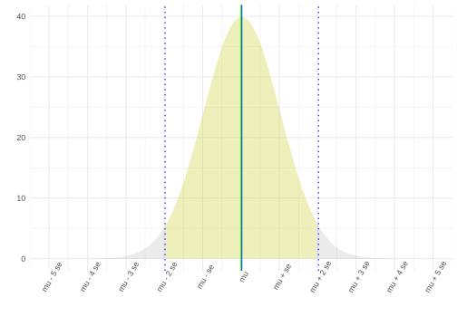
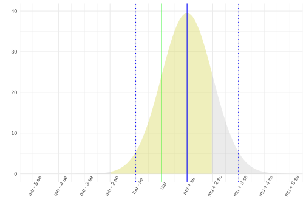
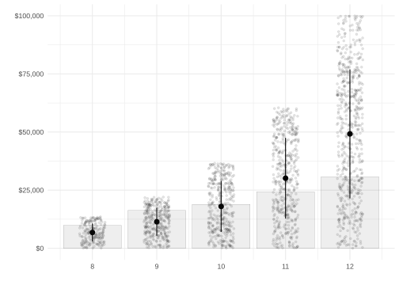

Suppose we have a sample \(Y_1 \ldots Y_n\) drawn with replacement from a population \(y_1 \ldots y_m\) with mean \(\mu = \frac{1}{m}\sum_{j=1}^m y_j\). We have it in an vector \(Y\) of length \(n\). We run this code.
What does this code calculate? State it in words and mark it with an ‘a’, and an arrow or bracket if necessary for clarity, on the appropriate plot above.
A 95% confidence interval, based on normal approximation, for the population mean \(\mu\). This is indicated by the horizontal segment (with a dot in the middle) on the right histogram.
Part B
How could you calculate roughly the same thing as in Part A using sd(Y.bar) and not sd(Y)?
Solution
We can use the standard deviation of the bootstrap sampling distribution, rather than sd(Y)/sqrt(n), as our estimate of the standard deviation of our point estimate mean(Y).
mean(Y) -1.96*sd(Y.bar)mean(Y) +1.96*sd(Y.bar)
Problem 2
Suppose \(Y_1 \ldots Y_n\) are sampled with replacement from a population with mean \(\mu=1\) and variance \(\sigma^2=1\). In Midterm 1, we discussed the estimator \(\tilde{Y}_k = \frac{1}{n-k} \sum_{i=1}^n Y_i\) for \(k=2\). Here, we’ll talk about that case and the case \(k=\sqrt{n}\).
Part A
For both estimators \(\tilde{Y}_2\) and \(\tilde{Y}_{\sqrt{n}}\), for each of the three sample sizes \(n=10\), \(n=10^2=100\), and \(n=10^4=10,000\), do the following.
Calculate the estimator’s mean \(\E[\tilde{Y}_k]\) and variance \(\Var[\tilde{Y}_k]\).
Sketch the estimator’s sampling distribution. Label your axes clearly and include \(\mu=1\) in your sketch.
On top of your sketches, illustrate how you’ve calculate the coverage probability of the interval estimate \(\tilde{Y}_k \pm 1.96 \sqrt{\Var[\tilde{Y}_{k}]}\).
Give a rough approximation of this coverage probability. You don’t have to do this well—just do it by eye. Is it about 95%? Is it above 50%? That’s the kind of precision I’m looking for.
You should have 6 sketches with corresponding means, standard errors, and coverage probabilities. That’s more than we’d ask for on the real exam. If you get the idea and want to save time by skipping the \(n=10^2\) case, that’s fine.
Solution
Let’s start by considering the general case, with arbitrary \(\mu\), \(\sigma\), and \(k\). We’ll calculate the mean.
\[
\begin{aligned}
\E[\tilde{Y}_k] &= \frac{1}{n-k}\sum_{i=1}^n \E[Y_i] = \frac{n}{n-k}\mu = \qty{\frac{n-k}{n-k} + \frac{k}{n-k}} \mu = \qty{1+\frac{k}{n-k}}\mu.
\end{aligned}
\] so the bias is
And the variance and resulting standard error. \[
\begin{aligned}
V[\tilde{Y}_k] &= V[ \frac{1}{n-k} \displaystyle \sum_{i=1}^n Y_i] \\
&= \frac{1}{(n-k)^2} V[ \sum_{i=1}^n Y_i]\\
&= \frac{1}{(n-k)^2} \qty(\sum_{i=1}^n V[Y_i])\\
&=\frac{1}{(n-k)^2} \qty(\sum_{i=1}^n \sigma^2 )\\
&=\frac{1}{(n-k)^2} n\sigma^2 \\
&= \frac{n\sigma^2}{(n-k)^2}
\end{aligned}
\] so its square root, the estimator’s standard error, is \[
\begin{aligned}
\text{se} = \sigma \sqrt{\frac{n}{(n-k)^2}}.
\end{aligned}
\] Specializing to the case \(\mu=\sigma=1\) we’re considering, we get a mean of \(1 + 2/(n-2)\) and standard error of \(\sqrt{n/(n-2)^2}\) for \(\tilde{Y}_2\) and a mean of \(1 + \sqrt{n}/(n-\sqrt{n})=1+1/(\sqrt{n}-1)\) and standard error of \(\sqrt{n/(n-\sqrt{n})^2}=1/(\sqrt{n}-1)\) for \(\tilde{Y}_{\sqrt{n}}\).
Now let’s draw some pictures. I’ll do it with code, so they’ll be a bit more precise than what I’d expect on an exam. We’ll have \(k=2\) on the left and \(k=\sqrt{n}\) on the right, with sample size increasing as we go downward. I’m scaling the \(x\)-axis so the sampling distributions all look about the same size—the spacing between the ticks is \(1/\sqrt{n}\).
I’ve drawn a normal approximation to the estimator’s sampling distribution in gray. The blue line is \(\E[\tilde Y]\) and the green line is \(\mu=1\). The dotted blue lines indicate \(\E[\tilde Y] \pm 1.96\sigma_n\). 95% of the sampling distribution is between them. And if we draw arms of length \(1.96\sigma_n\) on a point estimate \(\hat\mu\) drawn from this sampling distribution, we’ll get an interval covering \(\mu\) if and only if arms of the same length drawn around \(\mu\) touch the point estimate \(\hat\mu\) — i.e., if they’re within the range \(\mu \pm 1.96\sigma_n\) where we’ve colored the sampling distribution yellow. Thus, the coverage probability is the area we’ve colored yellow—the mass of the sampling distribution that’s in this range.
For \(k=2\), this coverage probability is well above 50% but less than 95% at \(n=10\) and gets closer to 95% as \(n\) increases (and therefore bias decreases). For \(k=\sqrt{n}\) we get essentially the same coverage probability as \(n\) increases because \(\text{bias}/{se} = \{ 1/(\sqrt{n}-1) \} / \{ 1/(\sqrt{n}-1) \} = 1\) for all \(n\). This is a bit worse than the coverage probability for \(k=2\) at \(n=10\) because \(\sqrt{10} \approx 3>2\), but still closer to 95% than to 50%.






Problem 3
In the plot below, I’m showing some data from a (fake) survey of people in your city who’ve recently finished with school and begun working. For whatever reason, nobody who attends school in this city goes to college, so everyone finishes with between 8 and 12 years of education. There are 10,000 of these people, and we mailed out (and received back) 2000 surveys, sampling from this population of 10,000 with replacement. The x-axis shows the survey recipient’s years of education, the y-axis sjpws their income, the points with arms are within-column means and standard deviations, and the heights of the bars are proportional to the proportion of recipients with each level of education.

Part A
Consider two summaries of the incremental value of a year of high school in this sample.
\(\hat\theta_{\text{people}}\) is larger. The increments \(\hat\mu(x) - \hat\mu(x-1)\) get larger as \(x\) increases, and so does the proportion of individuals with that level of education (i.e. the number of dots in the \(\text{years}=x\) column). In \(\hat\theta_{\text{people}}\), these larger increments get more weight because there are more with these lager values of \(x\); in \(\hat\theta_{\text{years}}\) all increments get equal weight.
These survey recipients went to two schools: School 0 (circles) and School 1 (triangles).1

Children in your district go to School 0. Your cousin, who lives in a district that goes to School 1, encourages you to pretend that you and your family live with them so that your child can go to School 1. This is a thing that happens, at least on the TV show ‘Friday Night Lights.’ Their argument is that School B must be better because the average income of students who have attended it is clearly higher. Check out this confidence interval for the difference in mean incomes of students who have attended the two schools, they say.
They even based their calculation on one of your QTM 220 homework solutions, so it’s got to be legit. School 1 is at least $7323 better.
You, on the other hand, look at the data and claim that a year at School 0 is worth just as much as a year at School 1. And you’re right. You calculate school-specific versions of \(\hat\theta_{\text{years}}\), bootstrap the difference between them, and find convincing evidence that the incremental value of a year at each school is the roughly the same.
Explain, in terms your cousin can understand, how it’s possible that the average income of students who have attended School 1 is higher than the average income of students who have attended School 0, but the average incremental value of a year at both schools is the same.
Problem 4
Below, I’ve shown least squares fits of six regression models to data from a randomized experiment. In this experiment, patients in our population were assigned to treatment (\(w=1\), green) or control (\(w=0\), red) with probability depending only on whether their age (\(x\)) was less than or equal to 65. Then, to get the patients who actually participated in our experiment, we sampled with replacement from this population.
Solution
Here’s some code that makes up this imaginary patient population and randomizes everybody to treatment.
And here’s code that draws a sample, fits a bunch of regression models to it, and uses each one to predict the mean outcome for each combination of treatment and age.
n =10000data = pop[sample(nrow(pop), n, replace=TRUE),]prediction.function =function(model) { function(w, x) { predict(model, newdata=data.frame(W=w, X=x)) }}fits =list(B =lm(Y ~ X, data=data),D =lm(Y ~ W, data=data), E =lm(Y ~ W +I(X <=65), data=data),A =lm(Y ~ W + X, data=data),C =lm(Y ~ W *I(X <=65), data=data),F =lm(Y ~ W * X, data=data))muhats = fits |>map(prediction.function)grid =expand_grid(W=c(0,1), X=seq(50,80,by=.01))predictions = muhats |>map(\(muhat) { grid$muhat =muhat(grid$W, grid$X) grid}) |>bind_rows(.id='model')
Here are the models. \[
\begin{aligned}
\model_1 &= \qty{ m(w,x) = a + bx \ : \ \text{ any numbers }\ a,b } && \text{ one line } \\
\model_2 &= \qty{ m(w,x) = a(w) : \ \text{ any function }\ a(w) } && \text{ horizontal lines } \\
\model_3 &= \qty{ m(w,x) = a(w) + bx \ : \ \text{ any function }\ a(w) \ \text{ and number }\ b } && \text{ parallel lines } \\
\model_4 &= \qty{ m(w,x) = a(w) + b(w)x \ : \ \text{ any functions }\ a(w),\ b(w) } && \text{ lines } \\
\model_5 &= \qty{ m(w,x) = a(w) + b \operatorname*{1_{\le 65}}(x) \ : \ \text{ any function } a(w) \ \text{ and number }\ b } && \text{ additive piecewise-constant } \\
\model_6 &= \qty{ m(w,x) = a(w) + b(w) \operatorname*{1_{\le 65}}(x) \ : \ \text{ any functions } a(w),\ b(w) } && \text{ piecewise-constant }
\end{aligned}
\] for \[
1_{\le 65}(x) = \begin{cases} 1 & \text{ if } x \le 65 \\ 0 & \text{ otherwise} \end{cases}.
\]
Part A
For each plot, identify the model that’s plotted. That is, for each plot A…F, give a model number 1…6.
Solution
\(\model_3\), parallel lines.
\(\model_1\), one line.
\(\model_5\), piecewise-constant.
\(\model_2\), horizontal lines.
\(\model_6\), additive piecewise-constant.
\(\model_4\), lines.
Suppose we want to estimate the average treatment effect on the treated, \[
\text{ATT} = \frac{1}{m_1}\sum_{j:w_j=1} \qty{ \mu(1,x_j) - \mu(0,x_j)} \qfor \mu(w,x) = \frac{\sum_{j: w_j,x_j=w,x } y_j}{\sum_{j: w_j,x_j=w} 1} \qand m_w = \sum_{j: w_j=1} 1.
\]
You do this by using a sample version of the same summary and using our least squares predicition \(\hat\mu(w,x)\) in place of \(\mu(w,x)\). \[
\widehat{\text{ATT}} = \frac{1}{N_1}\sum_{i:W_i=1} \qty{ \hat\mu(1,X_i) - \hat\mu(0,X_i) } \qfor N_w = \sum_{i: W_i=1} 1.
\]
Part B
For each model, state whether this’ll give you an unbiased estimate of the ATT. If your answer is yes, prove it. If you answer is no, explain why not.
This is Extra Credit. We’re not going to review this one in class. However, each correct answer is worth 1 point on your exam, so you can get up to 6 points of extra credit for this.If you get the ‘whether’ part right but the ‘why’ part wrong, you’ll get 1/2 point. I’ll provide you with the data and code used to generate the plot above, so you should be able to use to check your claims.
Recall from Homework 4 that the least squares residuals are orthogonal to all functions in the model, i.e., \[
\sum_{i=1}^n \qty{Y_i - \hat\mu(W_i,X_i)} m(W_i,X_i) = 0 \qqtext{ for every } m \in \model.
\]
Usually I use color instead of shape for this, but working with features we can plot in grayscale on exams will save colored ink and that saves the department some trouble.↩︎